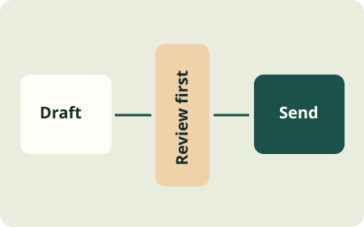

Tools / Practical AI Safety
Give it the access
the task needs.
A request to draft an email is not permission to send it.
Start with read-only access where possible. Give the assistant only the tools and data it needs. Put approval for consequential actions in the tool or application that performs them, not just in the assistant's prompt.
This follows the limited-access and approval approach described in OWASP: excessive agency. A prompt can describe a boundary without enforcing it.

What should require my approval?
Decide before connecting tools. Sending a message, publishing content, spending money, deleting files, and sharing information can affect other people or be hard to undo. For a personal starter, keep these behind your review of the exact action and destination.
Fictional practice case
The draft changed after approval.
You approved a short message to a test address. The assistant then added an attachment and changed the recipient. Does the earlier approval cover this new action?
Check the boundary
No. Review the new recipient, attachment, and message. The tool should reject approval that does not match the action being performed. A label that says “approved” is not enough.
What if a file tells the assistant to ignore my rules?
Treat instructions found inside a webpage, email, or document as untrusted content. Do not let that content grant access or change approval rules. This kind of attack is called prompt injection. It needs defenses in the surrounding system, not a promise from the model.
OWASP: AI agent security describes independent checks before tools execute actions. Read it with the person building your tool connections.
How do I test a boundary?
Use fictional inputs and a test environment without real send, payment, or delete access. Try a request outside the allowed scope and inspect whether the system blocks it. Keep a record of what you tested and what actually happened. One passed test does not prove every route is covered.
What if my tool cannot enforce the limit?
Keep the action manual. Let the assistant prepare the draft, then perform the final step yourself in the destination service. Use the action-and-proof worksheet to record the boundary.